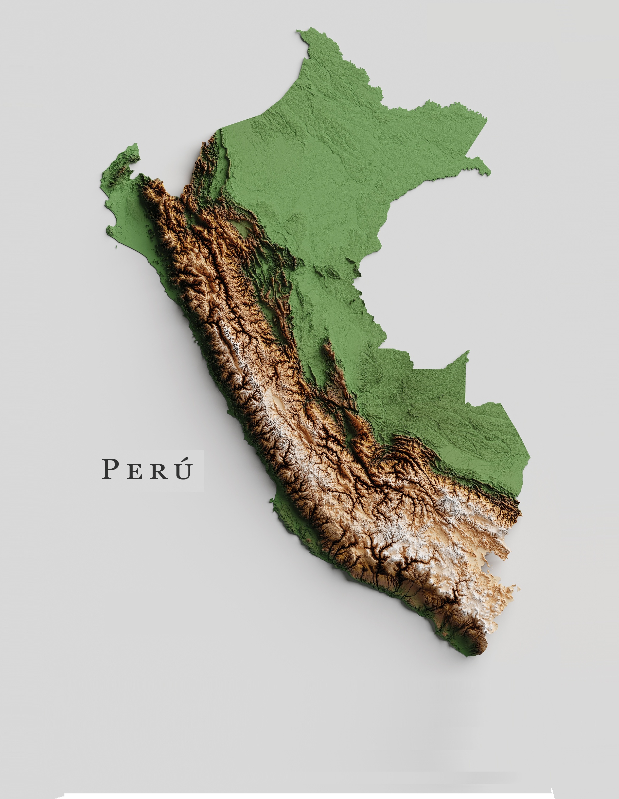
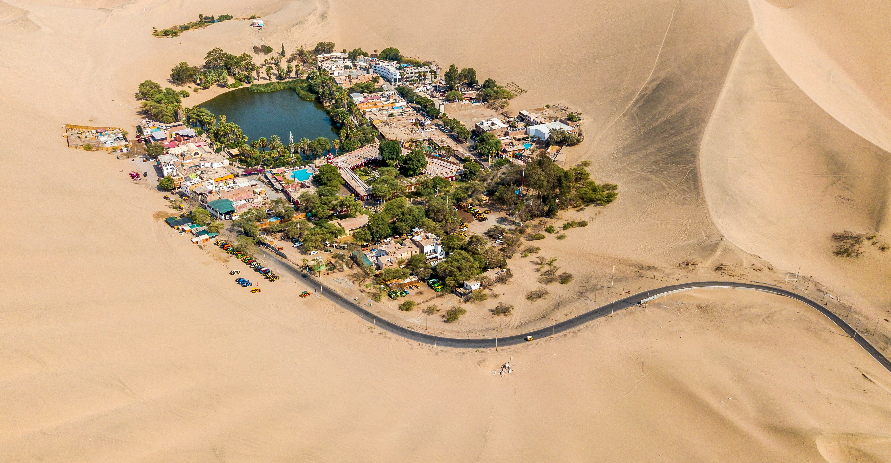
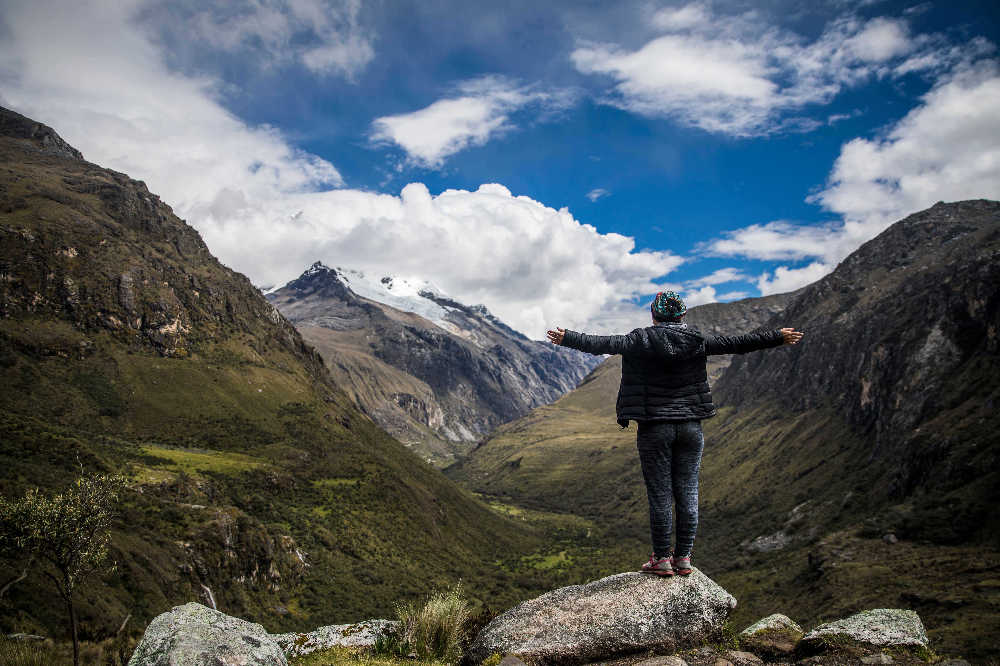
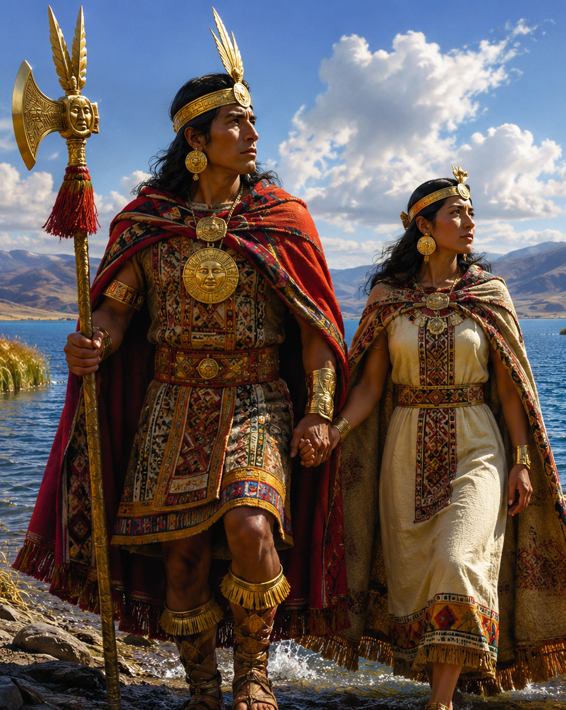
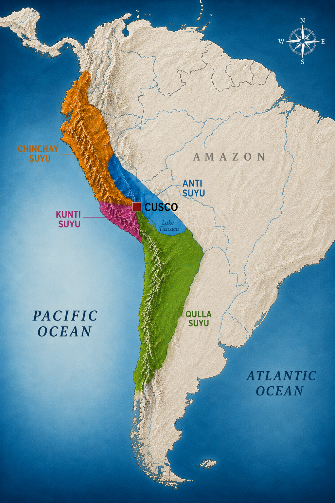
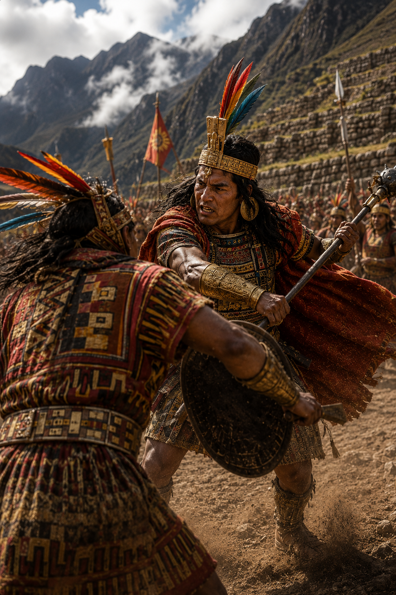
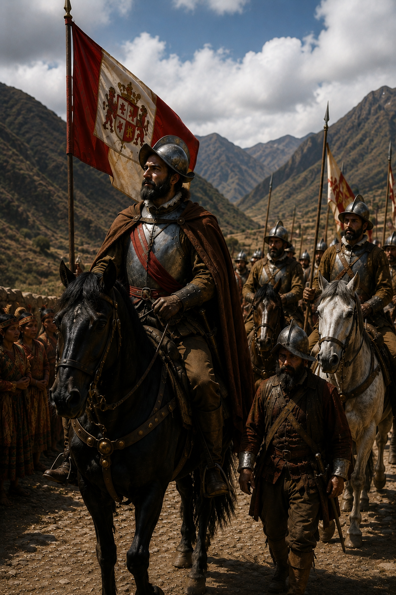
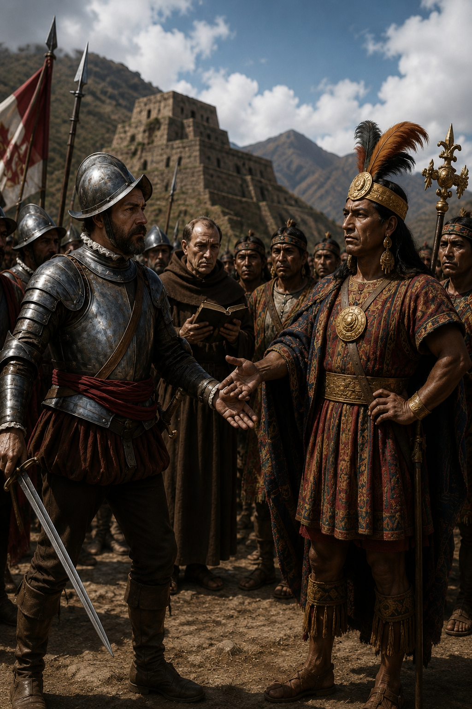
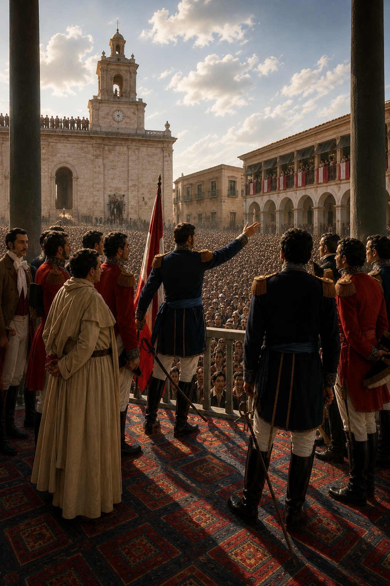

DISCOVER PERU
Some Facts
About Peru
A country of extraordinary landscapes, rich history, and one of the world's most fascinating ancient civilizations... and more.
Scroll to continue
Peru · MAP
Map Of Peru
▪ The Coast (Costa). A narrow, dry desert strip bordering the Pacific Ocean.
▪ The Highlands (Sierra). The high-altitude Peruvian Andes. This terrain is home to the former Inca capital of Cusco, Machu Picchu, and Arequipa.
▪ The Jungle (Selva). The Amazon, covering nearly 60% of Peru's landmass in the east.
~35M
Population
Spanish, Quechua and Aymara
Official Languages

Map or Peru
Peru · Region Coast
The Desert Coast
Vast dunes, ancient civilizations and dramatic landscapes beside the Pacific Ocean.
Explore the Andes
Peru · Region Andes
The Mighty Andes
Snow-covered peaks, fertile valleys and the enduring legacy of the Inca civilization.
Enter the Jungle
Peru · Region Jungle
The Amazon Jungle
A world of rivers, tropical forests and extraordinary biodiversity extending across eastern Peru.
Return to the BeginningDISCOVER PERU
Let's Start
From The Beginning
A brief summary of history
Scroll to continue
Peru · HISTORY
Inca Civilization Still Alive
The Sun God, Inti, looked down on a world where people walked without wisdom, law, or peace. He was sorry
for them and decided to guide humankind to light and order.
He sent his two sons, Manco Cápac and Mama Ocllo.
3
Natural regions
5,000+
Years of history
48
Indigenous languages

Manco Capac and Mama Ocllo leaving Lake Titicaca, Peru - Bolivia
The Inca TerritoryPeru · HISTORY
The Inca Territory (Tawantinsuyu)
At its greatest extent during the 15th and early 16th centuries, the Inca Empire—known as Tawantinsuyu, meaning "The Four Regions"—was the largest empire ever established in pre-Columbian America.
Included parts of today's: Colombia, Ecuador, Peru, Bolivia, Chile and Argentina.
4,000
km Along the Andes
2M
km2 Covered
30,000
km of Roads crossing mountains, deserts, and forests.
Peru · HISTORY
The Empire Became Weak
Before the Spanish arrived to Peru, the Incas had many problems.
▪ European diseases killed many people.
▪ The Inca Huayna Capac died.
▪ His sons, Atahualpa and Huáscar, fought for power.
▪ This civil war divided the empire.
▪ Atahualpa won, but the war left the Incas weak.

Fight between Atahualpa and HuascarPeru · HISTORY
Francisco Pizarro Arrives
Francisco Pizarro was a Spanish conqueror.
▪ He came to Peru looking for land, gold, and power.
▪ In 1532, he entered the Inca Empire.
▪ He had about 160–170 Spanish soldiers.
▪ The Spanish had horses, steel swords, guns, and small cannons.
▪ Pizarro also received help from Indigenous groups who opposed Inca rule.

Pizarro arrivesPeru · HISTORY
Pizarro meets Atahualpa
On November 16, 1532, Pizarro met Atahualpa in Cajamarca.
▪ Atahualpa arrived with many followers.
▪ Most of them had no weapons.
▪ The Spanish hid around the city square.
▪ They made a surprise attack.
▪ Many Incas were killed and Atahualpa was captured.

Pizarro meets AtahualpaDISCOVER PERU
1821: Freedom
July 28th - 205 Years of The Independence of Peru
Scroll to continue
Peru · HISTORY
Independence
After many years as a Spanish colony
▪ Argentine General José de San Martín liberated Lima and formally proclaimed Peru's independence on July 28, 1821.
▪ The decisive final victories against Spanish royalist forces were secured by Simón Bolívar at the Battles of Junín and Ayacucho in 1824

Independence of Peru - 1821DISCOVER PERU
Let's do some serious facts to this presentation.
Food and Tourism
Scroll to continue

DISCOVER PERU
Let's get more serious.
Food and Tourism
Scroll to continue

DISCOVER PERU
The End
Scroll to continue